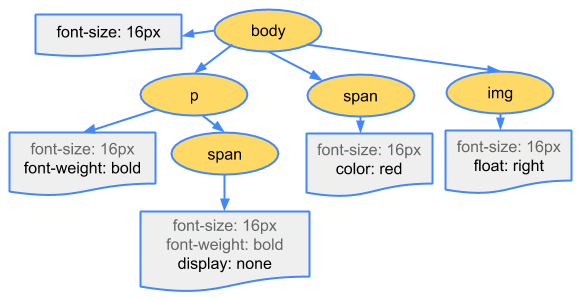

Critical Rendering Path
Constructing the Object Model
Before the browser can render the page it needs to construct the DOM and CSSOM trees. As a result, we need to ensure that we deliver both the HTML and CSS to the browser as quickly as possible.
Before the browser can render the page it needs to construct the DOM and CSSOM trees. As a result, we need to ensure that we deliver both the HTML and CSS to the browser as quickly as possible.
TL;DR
<html>
<head>
<meta name="viewport" content="width=device-width,initial-scale=1.0">
<link href="style.css" rel="stylesheet">
<title>Critical Path</title>
</head>
<body>
<p>Hello <span>web performance</span> students!</p>
<div><img src="awesome-photo.jpg"></div>
</body>
</html>
Let’s start, with the simplest possible case: a plain HTML page with some text and a single image. What does the browser need to do to process this simple page?


The final output of this entire process is the Document Object Model, or the “DOM” of our simple page, which the browser uses for all further processing of the page.
Every time the browser has to process HTML markup it has to step through all of the steps above: convert bytes to characters, identify tokens, convert tokens to nodes, and build the DOM tree. This entire process can take some time, especially if we have a large amount of HTML to process.

Note
If you open up Chrome DevTools and record a timeline while the page is loaded, you can see the actual time taken to perform this step — in the example above, it took us ~5ms to convert a chunk of HTML bytes into a DOM tree. Of course, if the page was larger, as most pages are, this process might take significantly longer. You will see in our future sections on creating smooth animations that this can easily become your bottleneck if the browser has to process large amounts of HTML.
With the DOM tree ready, do we have enough information to render the page to the screen? Not yet! The DOM tree captures the properties and relationships of the document markup, but it does not tell us anything about how the element should look when rendered. That’s the responsibility of the CSSOM, which we turn to next!
While the browser was constructing the DOM of our simple page, it encountered a link tag in the head section of the document referencing an external CSS stylesheet: style.css. Anticipating that it will need this resource to render the page, it immediately dispatches a request for this resource, which comes back with the following content:
body { font-size: 16px }
p { font-weight: bold }
span { color: red }
p span { display: none }
img { float: right }
Of course, we could have declared our styles directly within the HTML markup (inline), but keeping our CSS independent of HTML allows us to treat content and design as separate concerns: the designers can work on CSS, developers can focus on HTML, and so on.
Just as with HTML, we need to convert the received CSS rules into something that the browser can understand and work with. Hence, once again, we repeat a very similar process as we did with HTML:

The CSS bytes are converted into characters, then to tokens and nodes, and finally are linked into a tree structure known as the “CSS Object Model”, or CSSOM for short:

Why does the CSSOM have a tree structure? When computing the final set of styles for any object on the page, the browser starts with the most general rule applicable to that node (e.g. if it is a child of body element, then all body styles apply) and then recursively refines the computed styles by applying more specific rules - i.e. the rules “cascade down”.
To make it more concrete, consider the CSSOM tree above. Any text contained within the span tag that is placed within the body element will have a font size of 16 pixels and have red text - the font-size directive cascades down from body to the span. However, if a span tag is child of a paragraph (p) tag, then its contents are not displayed.
Also, note that the above tree is not the complete CSSOM tree and only shows the styles we decided to override in our stylesheet. Every browser provides a default set of styles also known as “user agent styles” – that’s what we see when we don’t provide any of our own – and our styles simply override these defaults (e.g. default IE styles). If you have ever inspected your “computed styles” in Chrome DevTools and wondered where all the styles are coming from, now you know!
Curious to know how long the CSS processing took? Record a timeline in DevTools and look for “Recalculate Style” event: unlike DOM parsing, the timeline doesn’t show a separate “Parse CSS” entry, and instead captures parsing and CSSOM tree construction, plus the recursive calculation of computed styles under this one event.

Our trivial stylesheet takes ~0.6ms to process and affects 8 elements on the page – not much, but once again, not free. However, where did the 8 elements come from? The CSSOM and DOM and are independent data structures! Turns out, the browser is hiding an important step. Next, lets talk about the render tree that links the DOM and CSSOM together.
Updated on 2014-09-12
Except as otherwise noted, the content of this page is licensed under the Creative Commons Attribution 3.0 License, and code samples are licensed under the Apache 2.0 License. For details, see our Site Policies.